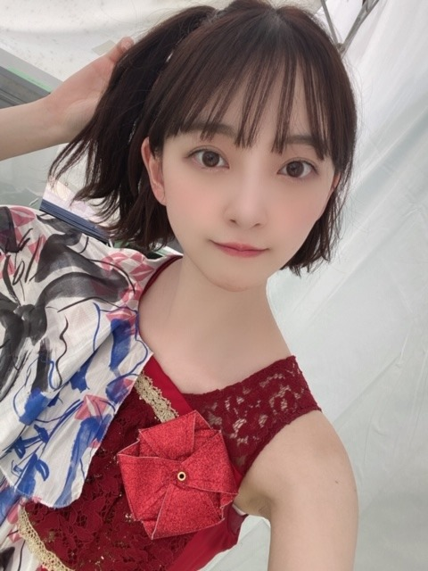
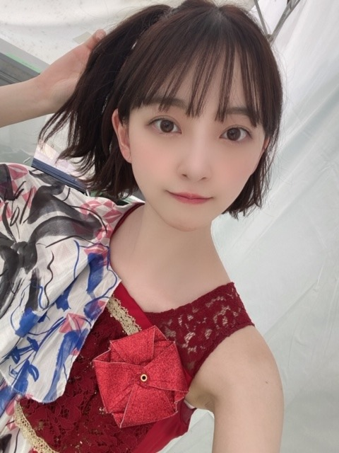

2020/0815Sat梨があるところは安全
夏ですね〜

わたしはお家でもこの盆踊りを
踊って夏感じてます！
みなさんもぜひ覚えて一緒に踊りましょ〜♩
♡

CDTV ライブライブもありがとうございました

CDTV ライブライブもありがとうございました
おんぷちゃんヘアしました
みなさんが好きって言ってくれるから
したのー^o^
絢音もいつも褒めてくれる♩
またします！
久しぶりの 海原〜 披露で
ちょっぴり緊張しました。笑
またいつか披露できたらいいなぁ
フロントに立たせていただけた
唯一の夏曲なので大事にしたいです

↑↓両方 her lip to の♡
今日は18時から
MUSIC FAIRに出ます
みてね〜
質問返しします〜
質問ください
では
2020/08/15 16:48
コメント(624)
ブログ更新ありがとう！最近暑くなってきたし、お互い体調に気を付けて頑張ろう！！次も絶対見るからね！
ありがとう〜未央奈〜
質問です 好きなアイスは何ですか？
おすすめの香水教えて〜
体調に気を付けて頑張ってください
質問です 好きなアイスは何ですか？
おすすめの香水教えて〜
体調に気を付けて頑張ってください
～質問～
写真集やテレビで見たんですが、
何でお茶漬けがそんなに好きなんですか？
美味しいお茶漬けの作り方とかあったら教えて欲しいです！
写真集やテレビで見たんですが、
何でお茶漬けがそんなに好きなんですか？
美味しいお茶漬けの作り方とかあったら教えて欲しいです！
質問じゃないんだけど、受験生に一言下さい！！
未央奈ちゃんこんばんは。
よっ！浴衣美人！！（なんか掛け声がオッサンだね）
僕は正直、浴衣の女性大好きなんだけど、今年の夏は夏祭りとか花火大会とかそういったイベントが軒並み開催されず、浴衣美人を見る機会もほとんど無くてとても淋しく思っていました。
なので、この度の未央奈ちゃんの浴衣姿は、まさに暑さを乗り切るための暑中見舞いって感じでとても嬉しく思っています。なにより似合うもんね～。
動画を見て、未央奈ちゃんと一緒に盆踊り行った気にでもなっときますよ（笑）
よっ！浴衣美人！！（なんか掛け声がオッサンだね）
僕は正直、浴衣の女性大好きなんだけど、今年の夏は夏祭りとか花火大会とかそういったイベントが軒並み開催されず、浴衣美人を見る機会もほとんど無くてとても淋しく思っていました。
なので、この度の未央奈ちゃんの浴衣姿は、まさに暑さを乗り切るための暑中見舞いって感じでとても嬉しく思っています。なにより似合うもんね～。
動画を見て、未央奈ちゃんと一緒に盆踊り行った気にでもなっときますよ（笑）
初コメです！
質問！
未央奈から見る岐阜の魅力を教えて！
(岐阜出身なのに未央奈からあまり話を聞かないから…)
質問！
未央奈から見る岐阜の魅力を教えて！
(岐阜出身なのに未央奈からあまり話を聞かないから…)
未央奈ちゃん！
浴衣姿かわいい(^^)
おんぷちゃんヘアかわいい！
オラもやろ～ あ、短髪だから無理や(._."ll)
質問
家族がホラー映画とかホラー番組が好きでよく見てるんですが
僕はどうしても怖くて見れません (〃゜゜〃)
未央奈ちゃんは見れますか？
浴衣姿かわいい(^^)
おんぷちゃんヘアかわいい！
オラもやろ～ あ、短髪だから無理や(._."ll)
質問
家族がホラー映画とかホラー番組が好きでよく見てるんですが
僕はどうしても怖くて見れません (〃゜゜〃)
未央奈ちゃんは見れますか？
みおな、こんばんは！更新ありがとう。 近況報告ありがとうございます。 では、毎日みおなに良いこと沢山ありますように！ おやすみおな！！
読書感想文の攻略法を教えてほしいです
更新ありがとー！
MUSIC FAIR今見たよ！録画で。笑
やっぱ今回の新曲はかっこいいなー！
浴衣姿も美しいです。
では、質問！
自撮りなど、写真撮る時に意識してることやコツとかありますか？
今だから思う、乃木坂のメンバーで良かったなと思うことは？
では、また遊びにきますね。
★とし★
MUSIC FAIR今見たよ！録画で。笑
やっぱ今回の新曲はかっこいいなー！
浴衣姿も美しいです。
では、質問！
自撮りなど、写真撮る時に意識してることやコツとかありますか？
今だから思う、乃木坂のメンバーで良かったなと思うことは？
では、また遊びにきますね。
★とし★
未央奈さん、こんばんは
ヤッター＼(^_^)／
浴衣姿の写真、欲しかったんです
優しい表情と浴衣の和かな色合い
ずっと見ていたいですf(^_^)
3枚目の写真と4、5枚目の写真
可愛らしい女の子と綺麗なお姉さん
ギャップが良きです
おんぷちゃんヘア
またしてね(^_^)
質問しますね
お家に乃木坂のメンバーさん
どなたか招待したことありますか
残暑厳しいですが
お身体に気をつけてくださいな
ヤッター＼(^_^)／
浴衣姿の写真、欲しかったんです
優しい表情と浴衣の和かな色合い
ずっと見ていたいですf(^_^)
3枚目の写真と4、5枚目の写真
可愛らしい女の子と綺麗なお姉さん
ギャップが良きです
おんぷちゃんヘア
またしてね(^_^)
質問しますね
お家に乃木坂のメンバーさん
どなたか招待したことありますか
残暑厳しいですが
お身体に気をつけてくださいな
堀ちゃんブログ更新ありがとう！
浴衣とっても素敵でした〜
質問
最近よく聴くアーティストさんは
誰ですか？
今食事で気をつけていることは何ですか？
シャンプーと化粧水は何を使ってますか？
次のブログ更新も楽しみにしてます！！
浴衣とっても素敵でした〜
質問
最近よく聴くアーティストさんは
誰ですか？
今食事で気をつけていることは何ですか？
シャンプーと化粧水は何を使ってますか？
次のブログ更新も楽しみにしてます！！
質問～乃木坂の中で未央奈の推しメンはだれですかー？
おすすめのスキンケア方法教えて欲しいです!!
未央奈ちゃん推しの、新規の中学3年生女子です！
質問です！
・未央奈ちゃんがヘアケアで気遣ってることはありますか？
・朝ごはんは何食べてますか？？
未央奈ちゃんみたいに美しくなりたくてくだらないかもだけど、こんな質問をしてみました！答えてくれたら嬉しい(＞＜)
今日MUSIC FAIRみました！未央奈ちゃん安定に可愛かったです❤︎
質問です！
・未央奈ちゃんがヘアケアで気遣ってることはありますか？
・朝ごはんは何食べてますか？？
未央奈ちゃんみたいに美しくなりたくてくだらないかもだけど、こんな質問をしてみました！答えてくれたら嬉しい(＞＜)
今日MUSIC FAIRみました！未央奈ちゃん安定に可愛かったです❤︎
みおなちゃんごめん 。No.17のコメントでみなみちゃんれんたん、みおなちゃんって書くつもりが、みおなちゃんが消えてみなみちゃん2人ある感じになってしまったすみません。決して、忘れてた訳では、何ないので。本当にすみません。
今日のMUSICFAIR良かったよ。振り付けが特に可愛い曲だと僕は、思います。小室哲哉先生に感謝です。今の時期コロナが流行りどこに行ってもいい状態で過ごせませんが、そして、接触しやすいライブやイベント、握手会などは、ありませんが、良くなることを願ってまた、お会い出来る日を待ちます。芸能界の方でも、流行っているので、上からに聞こえますがマスクを絶やさずにお体に気をつけてお過ごし下さいでは！
今日のMUSICFAIR良かったよ。振り付けが特に可愛い曲だと僕は、思います。小室哲哉先生に感謝です。今の時期コロナが流行りどこに行ってもいい状態で過ごせませんが、そして、接触しやすいライブやイベント、握手会などは、ありませんが、良くなることを願ってまた、お会い出来る日を待ちます。芸能界の方でも、流行っているので、上からに聞こえますがマスクを絶やさずにお体に気をつけてお過ごし下さいでは！
未央奈ブログ更新ありがとう！
海原〜、毎回とっても可愛いです(*´ω`*)
未央奈!!っていつも震えてます！可愛いすぎて！
質問
モンキーパークはまた行きたい?私の祖父母の家も岐阜でモンキーパークの近くなので前、テレビで訪れてくれて嬉しかった(*^^*)
ふくふくより
海原〜、毎回とっても可愛いです(*´ω`*)
未央奈!!っていつも震えてます！可愛いすぎて！
質問
モンキーパークはまた行きたい?私の祖父母の家も岐阜でモンキーパークの近くなので前、テレビで訪れてくれて嬉しかった(*^^*)
ふくふくより
今1押しの芸人さんをおしえてください！！
質問です！
地球最後の日に食べたいものは？
花火は手持ちと打ち上げどちらが好き？
無人島に一緒に連れてくメンバー選ぶとしたら誰？
地球最後の日に食べたいものは？
花火は手持ちと打ち上げどちらが好き？
無人島に一緒に連れてくメンバー選ぶとしたら誰？
盆踊り動画見ました
すごくかわいかった
海原～のとこ期待して見てたので大満足です
質問です
未央奈さんが夏の終わりを感じるのはどんな時ですか？
すごくかわいかった
海原～のとこ期待して見てたので大満足です
質問です
未央奈さんが夏の終わりを感じるのはどんな時ですか？
浴衣姿、とても似合ってますよ。
そして、浴衣の彩りと柄もいいです。
毎回、マンネリ化しないために色々されてご苦労さまとありがとうございます。
楽しみにしているファンのためにも、これからもよろしくね！
そして、浴衣の彩りと柄もいいです。
毎回、マンネリ化しないために色々されてご苦労さまとありがとうございます。
楽しみにしているファンのためにも、これからもよろしくね！
盆踊りとっても綺麗で素敵でした！！
堀ちゃんの好きな食べ物を聞きたいです！！
ちなみにですが僕はとんかつです！
堀ちゃんの好きな食べ物を聞きたいです！！
ちなみにですが僕はとんかつです！
未央奈は綺麗な大人っぽさもあるし可愛い子供っぽさもあって、本当にいろんな魅力があるなぁと思っていて、歌番組とかも毎回違った魅力が見れてとても嬉しいです！
でも未央奈的には綺麗と可愛いどっちのほうが褒められたら嬉しいのかな？
でも未央奈的には綺麗と可愛いどっちのほうが褒められたら嬉しいのかな？
受験勉強になかなか手がつかないので、堀ちゃんからエールが欲しいです！！
未央奈さん、MUSIC FAIR みたよー。今日の未央奈さんも素敵でした。ASMR、何やらよさげ。
今日の写真もいつもにもまして素晴らしく可愛く美しい。浴衣がとっても似合ってます。うとうとしている姿など、たまらんです。
未央奈への愛で破裂しそうです。
今日の写真もいつもにもまして素晴らしく可愛く美しい。浴衣がとっても似合ってます。うとうとしている姿など、たまらんです。
未央奈への愛で破裂しそうです。
ＭＦ、観たよー最高に可愛かった。
堀ちゃんこんばんわ！
朝テレビ見ててら急に盆踊りしてる姿が映ってびっくりしたよー。
今日のミュージックフェアもみたよー。
焚き火の動画流行ってるけど、見たことなかったので、
今日の夜はさっそく試してみよーと思ってます^_^
★質問★
久々に見返したいドラマやアニメはありますか？？？
暑い日が続いてるけど、体調には気をつけて、お仕事頑張ってね！
朝テレビ見ててら急に盆踊りしてる姿が映ってびっくりしたよー。
今日のミュージックフェアもみたよー。
焚き火の動画流行ってるけど、見たことなかったので、
今日の夜はさっそく試してみよーと思ってます^_^
★質問★
久々に見返したいドラマやアニメはありますか？？？
暑い日が続いてるけど、体調には気をつけて、お仕事頑張ってね！
ブログ更新してくれてありがとうございます
未央奈さんが今ハマっていることはなんですか？
みおな
暑いねぇ。
本当に溶けそうなくらいの暑さだよ。
毎日猛暑日。
嫌になるねぇ。
暑いねぇ。
本当に溶けそうなくらいの暑さだよ。
毎日猛暑日。
嫌になるねぇ。
みおなしゅき！
・へい未央奈(•ө•)
・へのへのキューティクル音頭も練習してね未央奈(•ө•)♡。笑(ないわ！)
へっのへへへのへの(それそれそれそれ)へへっへーへのへーの音頭だよーん(それそれそれそれー)。笑
・無理はしたくないが、性格的に無理しちゃうんだよな( ͡° ͜ʖ ͡°)秋になれば、更に仕事が忙しくなるから、ランニングが続けられるか不安だ＿|￣|○膝の痛みはバンテリンの膝サポーターを買おうかと。
つうか今日送ってきたモバメの可愛らしいお洋服の左紐がねじれてるぞ。笑
そのファッション色合い的に良き(•ө•)♡
・今の時間(23時頃)からホラー映画観るのは怖いんだが、明日もう一本洋画を観るために観ておきたい(*´﹃｀*)。笑
・おやすみおなー
・へのへのキューティクル音頭も練習してね未央奈(•ө•)♡。笑(ないわ！)
へっのへへへのへの(それそれそれそれ)へへっへーへのへーの音頭だよーん(それそれそれそれー)。笑
・無理はしたくないが、性格的に無理しちゃうんだよな( ͡° ͜ʖ ͡°)秋になれば、更に仕事が忙しくなるから、ランニングが続けられるか不安だ＿|￣|○膝の痛みはバンテリンの膝サポーターを買おうかと。
つうか今日送ってきたモバメの可愛らしいお洋服の左紐がねじれてるぞ。笑
そのファッション色合い的に良き(•ө•)♡
・今の時間(23時頃)からホラー映画観るのは怖いんだが、明日もう一本洋画を観るために観ておきたい(*´﹃｀*)。笑
・おやすみおなー
質問
JｰPOPは好きですか？
JｰPOPは好きですか？
未央奈さんお疲れ様です！
いつもたくさんのブログ更新楽しみにしてます
質問なんですが、未央奈さんが今1番買いたいものってなんですか？？教えて貰えたら嬉しいです！
体調に気をつけて頑張ってください！！
いつもたくさんのブログ更新楽しみにしてます
質問なんですが、未央奈さんが今1番買いたいものってなんですか？？教えて貰えたら嬉しいです！
体調に気をつけて頑張ってください！！
質問です。大乱闘で使うなら、ピットですかブラックピットですかどちらですか。
更新ありがとうございます。これからも頑張ってください。
更新ありがとうございます。これからも頑張ってください。
質問です。大乱闘で使うなら、ピットですかブラックピットですかどちらですか。
更新ありがとうございます。これからも頑張ってください。
更新ありがとうございます。これからも頑張ってください。
堀ちゃん浴衣姿カワイイ萌〜！
夏ですね!
でも祭りがないから少し夏らしさが足りない気が!?
花火もしたいな!
#未央奈への質問
未央奈の名前の由来を教えて下さい!
極めたいって言ってたゲームは何ですか?
小説は読みますか?
ではまたコメントおじゃまします♪
夏ですね!
でも祭りがないから少し夏らしさが足りない気が!?
花火もしたいな!
#未央奈への質問
未央奈の名前の由来を教えて下さい!
極めたいって言ってたゲームは何ですか?
小説は読みますか?
ではまたコメントおじゃまします♪
おすすめしたい夏曲は？
未央奈～ こんにちは
ブログ更新ありがとうございます。
２４時間テレビの盆踊り動画見ましたよ。れんたんがいるっていうことは、着付けはれんたん？ いい感じですね。
本来なら、私の地域でも今夜が盆踊りだったのですが、今年は何もかもイベントがなくなり、ホント寂しい限りです。
ＭＦ、もちろん見ましたよ。「焚き火」の音がお気に入りということでしたが、何やらファンの方から心配な声が上がっていましたね。私は、「火事の夢」見て、汗かいて目が覚めたりしないかと心配したのですが、昔はよく言いましたよね。そんな時は「おねしょ」するって‥‥。さすがにないとは思いますが、怖いと思ったことはなかったですか。
ところで、前回のブログのペルセウス座流星群の件ですが、あのあと雲が晴れてきて、２回ほど見ることができました。
質問コーナー？
じゃあ、岐阜の観光スポット、ベスト５を教えてください。
ブログ更新ありがとうございます。
２４時間テレビの盆踊り動画見ましたよ。れんたんがいるっていうことは、着付けはれんたん？ いい感じですね。
本来なら、私の地域でも今夜が盆踊りだったのですが、今年は何もかもイベントがなくなり、ホント寂しい限りです。
ＭＦ、もちろん見ましたよ。「焚き火」の音がお気に入りということでしたが、何やらファンの方から心配な声が上がっていましたね。私は、「火事の夢」見て、汗かいて目が覚めたりしないかと心配したのですが、昔はよく言いましたよね。そんな時は「おねしょ」するって‥‥。さすがにないとは思いますが、怖いと思ったことはなかったですか。
ところで、前回のブログのペルセウス座流星群の件ですが、あのあと雲が晴れてきて、２回ほど見ることができました。
質問コーナー？
じゃあ、岐阜の観光スポット、ベスト５を教えてください。
好きなお弁当の具材は？？
答えてくれると嬉しいな！
大好きだよ！みおなちゃん！
高２の女子なんですけど、みおなちゃんに救われてます。
答えてくれると嬉しいな！
大好きだよ！みおなちゃん！
高２の女子なんですけど、みおなちゃんに救われてます。
ココ＆ナツってゆーサルのブランドのお人形知ってますか？？
すごく可愛いんですよ！
みおなちゃん絶対好きです。ほんとにオススメ！！！
すごく可愛いんですよ！
みおなちゃん絶対好きです。ほんとにオススメ！！！
最近も焚き火きいてますか？他に、いい音あったら教えて欲しいです！！
未央奈ちゃんおつかれです。毎日暑いですが水分補給は、しっかり取ってね。俺のところも今日超暑かったよ。グズん
僕は挑戦が出来ない現状維持タイプなので今も新しいことに挑戦してる堀さんがかっこいいです！
海原〜ウインク大好きです
ワンピース と同じ柄のパジャマもありますよね
買うか悩んでおります。。。
ワンピース と同じ柄のパジャマもありますよね
買うか悩んでおります。。。
今日も写真かわいかったです！
今の髪色と髪型とメイクだいすきです
質問です！！！！！
オススメのリップやグロスを教えてほしいです！
出来ればお手頃な値段で、、笑
今の髪色と髪型とメイクだいすきです
質問です！！！！！
オススメのリップやグロスを教えてほしいです！
出来ればお手頃な値段で、、笑
堀ちゃんブログ更新ありがとう！
浴衣姿が最上級にかわいい！！ 盆踊りも最高でした。れんたんとみなみちゃんもエグかった。www
おんぷちゃんヘアーも最高！！
ロングヘアーの女性が好きな俺も堀ちゃんはショートもロングもどっちも大好きです。
まじでどっちも鬼かわいい。
〜質問〜
・千代保稲荷に行ったことありますか？
・スタイル維持のために毎日心がけていることは？
・筋トレとかしますか？ していたら、行うメニューも教えてください！
・夏といえば？
浴衣姿が最上級にかわいい！！ 盆踊りも最高でした。れんたんとみなみちゃんもエグかった。www
おんぷちゃんヘアーも最高！！
ロングヘアーの女性が好きな俺も堀ちゃんはショートもロングもどっちも大好きです。
まじでどっちも鬼かわいい。
〜質問〜
・千代保稲荷に行ったことありますか？
・スタイル維持のために毎日心がけていることは？
・筋トレとかしますか？ していたら、行うメニューも教えてください！
・夏といえば？
ブログのタイトルって！もしかして！
「劇場」見たんですか？！私も見ました！
好きなシーンはありますか？？
「劇場」見たんですか？！私も見ました！
好きなシーンはありますか？？
ブログありがとう！！今日も可愛かったです！
Music Fairも見ましたー！みおなちゃん
可愛かったー！
質問
乃木坂の曲で1番好きな曲は何ですかー？
私は最近「なぞの落書き」をよく聴いてます！
答えてくださると嬉しいです☺️
Music Fairも見ましたー！みおなちゃん
可愛かったー！
質問
乃木坂の曲で1番好きな曲は何ですかー？
私は最近「なぞの落書き」をよく聴いてます！
答えてくださると嬉しいです☺️
みおな
今日もお疲れ様です
浴衣可愛いです
なぜなのか女の子の浴衣は3割増しに見えますね
何とも思ってない友達女子でも浴衣姿で現れた時は少しドキッとした経験があります（その子に自分の為に浴衣にしたと言われてからは付き合えないけど少し優しくしてます）
みおなは10割増しになるから200%可愛いです（上の言葉みおなに言われたい笑）
ミュージックフェア観たよ
ROUTE 246はカッコいいです
坂のない人生は、汗の輝きを知らないって歌詞が好きです（本当にそう思う）
質問
最近楽しみにしてる事って何かありますか？
またコメントします
ありがとうございました
今日もお疲れ様です
浴衣可愛いです
なぜなのか女の子の浴衣は3割増しに見えますね
何とも思ってない友達女子でも浴衣姿で現れた時は少しドキッとした経験があります（その子に自分の為に浴衣にしたと言われてからは付き合えないけど少し優しくしてます）
みおなは10割増しになるから200%可愛いです（上の言葉みおなに言われたい笑）
ミュージックフェア観たよ
ROUTE 246はカッコいいです
坂のない人生は、汗の輝きを知らないって歌詞が好きです（本当にそう思う）
質問
最近楽しみにしてる事って何かありますか？
またコメントします
ありがとうございました


日焼け止め何使ってる
最近ブログ毎日更新してくれて嬉しい